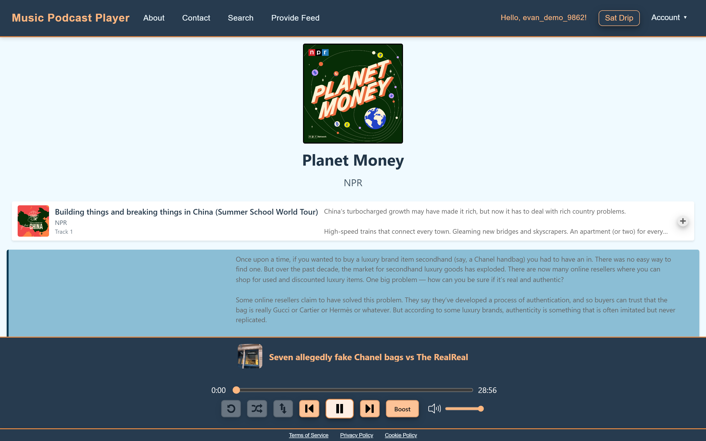
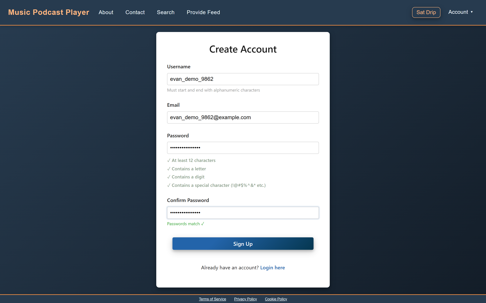
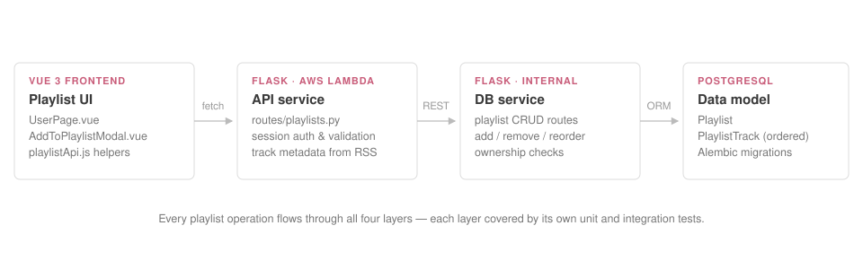
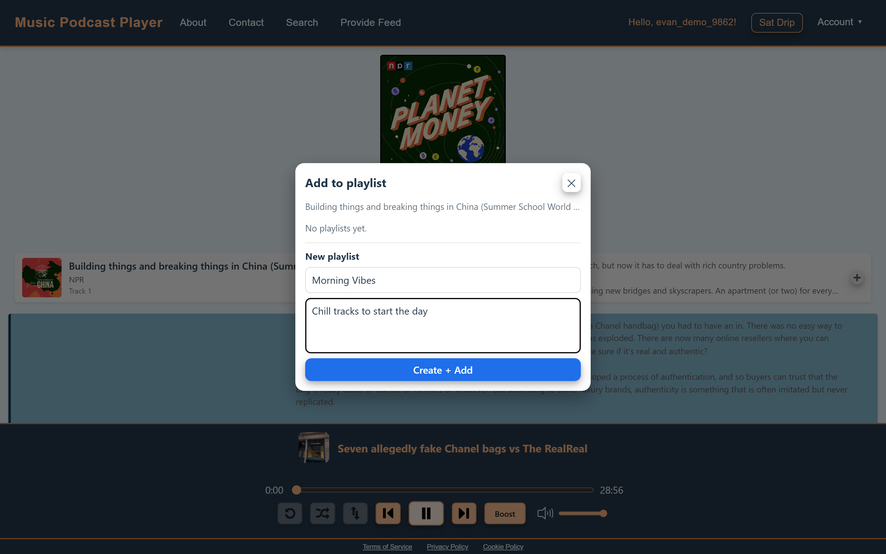
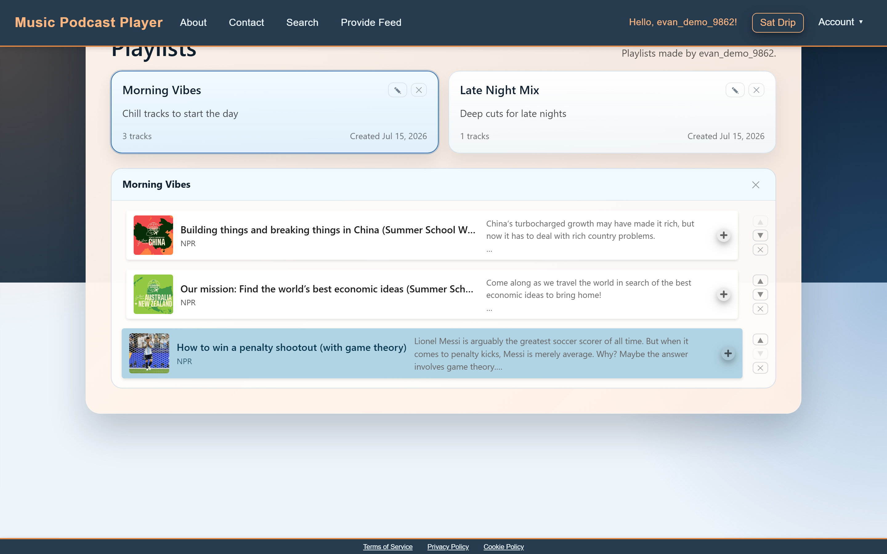
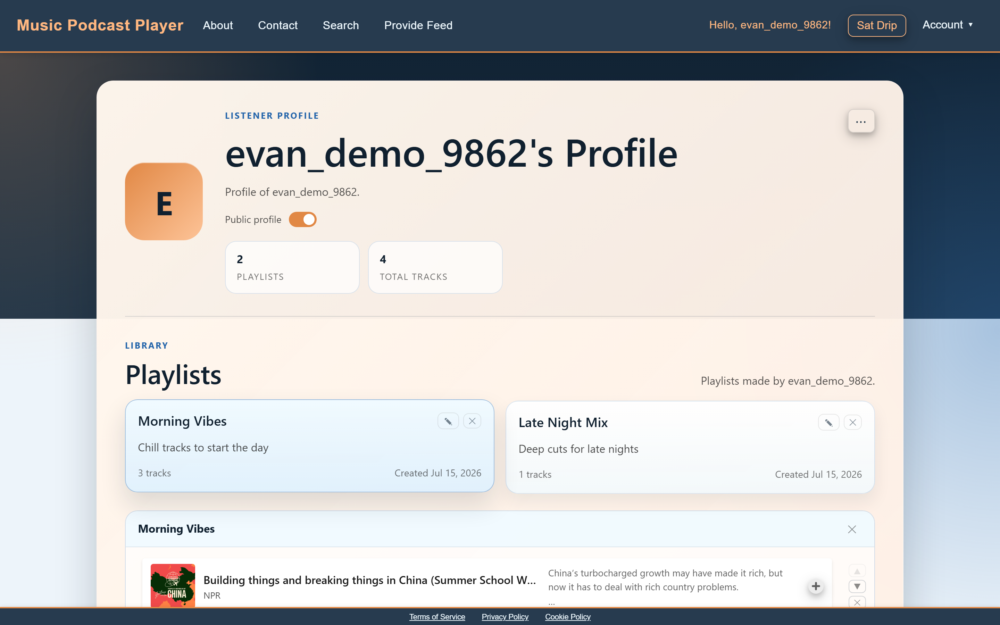

RSS Music Player
My senior capstone: a live web app that plays music and podcasts straight from artists' RSS feeds, with Bitcoin tipping built in.

As part of my senior capstone, my team and I built the Music Podcast Player — live today at musicpodcastplayer.com. Artists publish their music as an RSS feed, anyone can stream it for free, and listeners who want to support an artist can send Bitcoin micropayments while they listen. The app is a Vue 3 frontend with a Python backend and PostgreSQL, on AWS. You can try it at the bottom of this page.
Frontend foundations
I pitched our frontend stack — Vite, Vue 3, and JavaScript — and built the first pieces of the app: the components that turn an RSS feed into the playable track list in the banner above, and the navigation bar. The mini player was later built on top of them.
I also reorganized the whole frontend: every .vue file keeps only its layout and
styling, and the logic lives in its own JavaScript file. That made the code easy to test, and
the team followed the pattern for the rest of the project.
NavBar.vue renders it · navBar.js drives it ·
navBar.test.js proves it — repeated across ~25 components.
I set the direction for frontend testing: I wrote the project's first tests, covered every logic file, and hooked the suite into GitHub Actions so it runs on every pull request. I also added structured logging across the backend so AWS CloudWatch could graph what the app was doing.
Accounts & sign-in
I built the account system. Signing up requires verifying your email: the backend generates a six-digit code, emails it with AWS Simple Email Service (SES), and only creates the account once the right code comes back.

Guardrails in the form
The signup form checks everything as you type — a live checklist for password rules, username rules, and matching passwords — so bad input gets caught before it's ever sent to the server.
Sign-in uses PKCE: the login page creates a random secret and sends the server a hash of it, then the secret itself goes along with your password — so a captured login request can't be replayed. A successful login sets two signed tokens (JWTs) as httpOnly cookies, a one-hour access token and a seven-day refresh token, which JavaScript can never read.
The playlist epic
The feature I'm proudest of is playlists — I planned the epic as scrum master and built most of it. The backend got a new table for playlist tracks and endpoints to add, remove, and reorder them, with unit and integration tests at every layer.


Add to playlist
Every track gets a + button that opens this modal — pick an existing
playlist or create one on the spot.
I redesigned the profile page around playlists: cards you can edit in place, a track list with reorder and remove buttons, and stats up top.

I also made profiles shareable: flip a switch and anyone can see your playlists at
musicpodcastplayer.com/user/yourname.

Pages the client can edit
Our client needed to update the About and Contact pages himself, without a developer redeploying the site. I built exactly that: admin accounts get an Edit button right on the page, saves go to Amazon S3 and serve through CloudFront, and DOMPurify scrubs the content before it renders so even an admin account can't sneak malicious code into the site.
Leading the team
I took on a lot of the leadership on this project: keeping track of what needed doing, checking on progress, assigning work when our project manager was away, and picking up extra tasks when someone fell behind. I was also a go-to pull request reviewer and the team's unofficial QA lead, keeping tests green through big merges.
Try it yourself
This is the real app, live in this page. Search for a podcast, or make an account and build a playlist — everything on this page works right here.